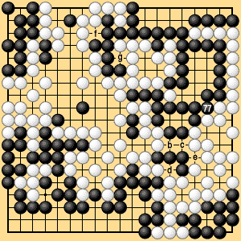

<HTML>
<HEAD><TITLE>6.1 $BIaDLNc(J(8)</TITLE></HEAD>
<BODY BGCOLOR="#FFFFFF" BACKGROUND="../images/bg01.gif">

<P>
<CENTER>
<TABLE BORDER="0" CELLPADDING="0" CELLSPACING="0" WIDTH="95%">
<TR>
<TH ALIGN="left" VALIGN="top"><FONT SIZE="+2">6.1 $BIaDLNc(J(8)</FONT></TH>
</TR>
</TABLE>
</CENTER>
</P>


<P>
<CENTER>
<TABLE BORDER="0" CELLPADDING="0" CELLSPACING="0" WIDTH="90%">
<TR>
<TD>
$BBfOQ<0%k!<%k$G$O9u$O(J277$B$G(Ja$B$KBGCe$9$l$PGr$O:G=i$N%Q%9$r9T$C$F9u(J277$B$r<j;_$j$H$9$l$P$h$$!#7k2L$OGr(J2$BL\>!$H$J$k!#(J<BR>
$B?7%k!<%k;n0F$G$O9u(J277$B$r%Q%9$7$?$H$-!"%@%a$,4q?t%38NGr$O%Q%9$H$7$F2>=*6I$K$9$k$H(J1$BL\$NB;$K$J$k$N$GGr$,(Ja(77)$B$KBGCe$7!"99$K9u$,%Q%9$r$9$l$PGr$O%Q%9$r;}$C$F1~$8$F2>=*6I$H$J$k!#(J
</TD></TR>
</TABLE>
</CENTER>
</P>

<P>
<CENTER>
<TABLE BORDER="0" CELLPADDING="5">
<TR>
<TD></TD>
</TR>


<TR>
<TH NOWRAP>$BBh(J6-2-2$B?^(J</TH>
</TR>
</TABLE>
</CENTER>
</P>

<P>
<CENTER>
<TABLE BORDER="0" CELLPADDING="3" CELLSPACING="5">
<TR>
<TD VALIGN="bottom"><A HREF="../j_menu.html"></A></TD>
<TD VALIGN="bottom"><A HREF="../j_rules.html"></A></TD>
<TD><BR></TD>
<TD VALIGN="bottom"><A HREF="j6010007.html"></A></TD>
<TD VALIGN="bottom"><A HREF="j6010009.html"></A></TD>
</TR>
</TABLE>
</CENTER>
</P>


<script type="text/javascript">
var gaJsHost = (("https:" == document.location.protocol) ? "https://ssl." : "http://www.");
document.write(unescape("%3Cscript src='" + gaJsHost + "google-analytics.com/ga.js' type='text/javascript'%3E%3C/script%3E"));
</script>
<script type="text/javascript">
var pageTracker = _gat._getTracker("UA-968446-2");
pageTracker._initData();
pageTracker._trackPageview();
</script>

<!-- ClickTale Top part -->
<script type="text/javascript">
var WRInitTime=(new Date()).getTime();
</script>
<!-- ClickTale end of Top part -->

<!-- ClickTale Bottom part -->
<div id="ClickTale" style="display: none;"></div>
<script src="http://s.clicktale.net/WRa.js" type="text/javascript"></script>
<script type="text/javascript">
if(typeof ClickTale=='function') ClickTale(12997,1);
</script>
<!-- ClickTale end of Bottom part -->
</BODY>
</HTML>